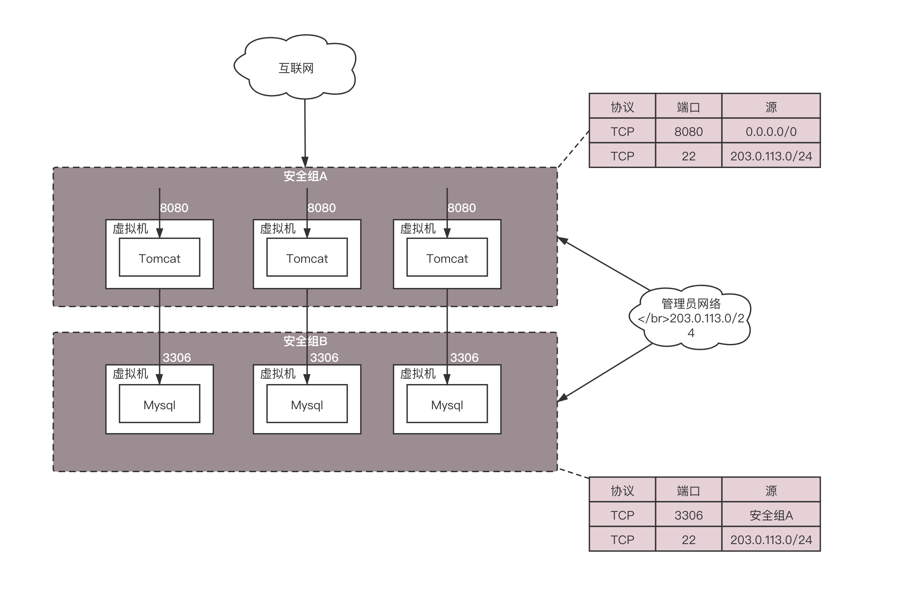
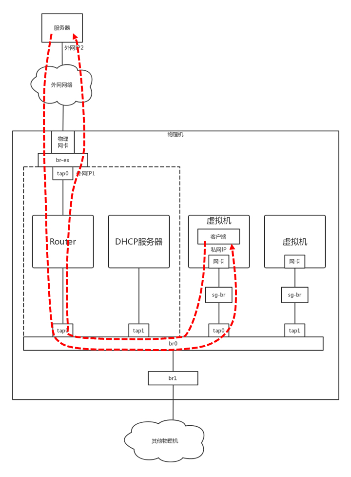

- 00 开篇词 想成为技术牛人？先搞定网络协议！.md
- 01 为什么要学习网络协议？.md
- 02 网络分层的真实含义是什么？.md
- 03 ifconfig：最熟悉又陌生的命令行.md
- 04 DHCP与PXE：IP是怎么来的，又是怎么没的？.md
- 05 从物理层到MAC层：如何在宿舍里自己组网玩联机游戏？.md
- 06 交换机与VLAN：办公室太复杂，我要回学校.md
- 07 ICMP与ping：投石问路的侦察兵.md
- 08 世界这么大，我想出网关：欧洲十国游与玄奘西行.md
- 09 路由协议：西出网关无故人，敢问路在何方.md
- 10 UDP协议：因性善而简单，难免碰到“城会玩”.md
- 11 TCP协议（上）：因性恶而复杂，先恶后善反轻松.md
- 12 TCP协议（下）：西行必定多妖孽，恒心智慧消磨难.md
- 13 套接字Socket：Talk is cheap, show me the code.md
- 14 HTTP协议：看个新闻原来这么麻烦.md
- 15 HTTPS协议：点外卖的过程原来这么复杂.md
- 16 流媒体协议：如何在直播里看到美女帅哥？.md
- 17 P2P协议：我下小电影，99%急死你.md
- 18 DNS协议：网络世界的地址簿.md
- 19 HttpDNS：网络世界的地址簿也会指错路.md
- 20 CDN：你去小卖部取过快递么？.md
- 21 数据中心：我是开发商，自己拿地盖别墅.md
- 22 VPN：朝中有人好做官.md
- 23 移动网络：去巴塞罗那，手机也上不了脸书.md
- 24 云中网络：自己拿地成本高，购买公寓更灵活.md
- 25 软件定义网络：共享基础设施的小区物业管理办法.md
- 26 云中的网络安全：虽然不是土豪，也需要基本安全和保障.md
- 27 云中的网络QoS：邻居疯狂下电影，我该怎么办？.md
- 28 云中网络的隔离GRE、VXLAN：虽然住一个小区，也要保护隐私.md
- 29 容器网络：来去自由的日子，不买公寓去合租.md
- 30 容器网络之Flannel：每人一亩三分地.md
- 31 容器网络之Calico：为高效说出善意的谎言.md
- 32 RPC协议综述：远在天边，近在眼前.md
- 33 基于XML的SOAP协议：不要说NBA，请说美国职业篮球联赛.md
- 34 基于JSON的RESTful接口协议：我不关心过程，请给我结果.md
- 35 二进制类RPC协议：还是叫NBA吧，总说全称多费劲.md
- 36 跨语言类RPC协议：交流之前，双方先来个专业术语表.md
- 37 知识串：用双十一的故事串起碎片的网络协议（上）.md
- 38 知识串：用双十一的故事串起碎片的网络协议（中）.md
- 39 知识串：用双十一的故事串起碎片的网络协议（下）.md
- 40 搭建一个网络实验环境：授人以鱼不如授人以渔.md
- 加餐1 创作故事：我是如何创作“趣谈网络协议”专栏的？.md
- 协议专栏特别福利 答疑解惑1期.md
- 协议专栏特别福利 答疑解惑2期.md
- 协议专栏特别福利 答疑解惑3期.md
- 协议专栏特别福利 答疑解惑4期.md
- 协议专栏特别福利 答疑解惑5期.md
- 结束语 放弃完美主义，执行力就是限时限量认真完成.md
26 云中的网络安全：虽然不是土豪，也需要基本安全和保障
在今天的内容开始之前，我先卖个关子。文章结尾，我会放一个超级彩蛋，所以，今天的内容你一定要看到最后哦！
上一节我们看到，做一个小区物业维护一个大家共享的环境，还是挺不容易的。如果都是自觉遵守规则的住户那还好，如果遇上不自觉的住户就会很麻烦。
就像公有云的环境，其实没有你想的那么纯净，各怀鬼胎的黑客到处都是。扫描你的端口呀，探测一下你启动的什么应用啊，看一看是否有各种漏洞啊。这就像小偷潜入小区后，这儿看看，那儿瞧瞧，窗户有没有关严了啊，窗帘有没有拉上啊，主人睡了没，是不是时机潜入室内啊，等等。
假如你创建了一台虚拟机，里面明明跑了一个电商应用，这是你非常重要的一个应用，你会把它进行安全加固。这台虚拟机的操作系统里，不小心安装了另外一个后台应用，监听着一个端口，而你的警觉性没有这么高。
虚拟机的这个端口是对着公网开放的，碰巧这个后台应用本身是有漏洞的，黑客就可以扫描到这个端口，然后通过这个后台应用的端口侵入你的机器，将你加固好的电商网站黑掉。这就像你买了一个五星级的防盗门，卡车都撞不开，但是厕所窗户的门把手是坏的，小偷从厕所里面就进来了。
所以对于公有云上的虚拟机，我的建议是仅仅开放需要的端口，而将其他的端口一概关闭。这个时候，你只要通过安全措施守护好这个唯一的入口就可以了。采用的方式常常是用ACL（Access Control List，访问控制列表）来控制IP和端口。
设置好了这些规则，只有指定的IP段能够访问指定的开放接口，就算有个有漏洞的后台进程在那里，也会被屏蔽，黑客进不来。在云平台上，这些规则的集合常称为安全组。那安全组怎么实现呢？
我们来复习一下，当一个网络包进入一台机器的时候，都会做什么事情。
首先拿下MAC头看看，是不是我的。如果是，则拿下IP头来。得到目标IP之后呢，就开始进行路由判断。在路由判断之前，这个节点我们称为PREROUTING。如果发现IP是我的，包就应该是我的，就发给上面的传输层，这个节点叫作INPUT。如果发现IP不是我的，就需要转发出去，这个节点称为FORWARD。如果是我的，上层处理完毕后，一般会返回一个处理结果，这个处理结果会发出去，这个节点称为OUTPUT，无论是FORWARD还是OUTPUT，都是路由判断之后发生的，最后一个节点是POSTROUTING。
整个过程如图所示。
整个包的处理过程还是原来的过程，只不过为什么要格外关注这五个节点呢？
是因为在Linux内核中，有一个框架叫Netfilter。它可以在这些节点插入hook函数。这些函数可以截获数据包，对数据包进行干预。例如做一定的修改，然后决策是否接着交给TCP/IP协议栈处理；或者可以交回给协议栈，那就是ACCEPT；或者过滤掉，不再传输，就是DROP；还有就是QUEUE，发送给某个用户态进程处理。
这个比较难理解，经常用在内部负载均衡，就是过来的数据一会儿传给目标地址1，一会儿传给目标地址2，而且目标地址的个数和权重都可能变。协议栈往往处理不了这么复杂的逻辑，需要写一个函数接管这个数据，实现自己的逻辑。
有了这个Netfilter框架就太好了，你可以在IP转发的过程中，随时干预这个过程，只要你能实现这些hook函数。
一个著名的实现，就是内核模块ip_tables。它在这五个节点上埋下函数，从而可以根据规则进行包的处理。按功能可分为四大类：连接跟踪（conntrack）、数据包的过滤（filter）、网络地址转换（nat）和数据包的修改（mangle）。其中连接跟踪是基础功能，被其他功能所依赖。其他三个可以实现包的过滤、修改和网络地址转换。
在用户态，还有一个你肯定知道的客户端程序iptables，用命令行来干预内核的规则。内核的功能对应iptables的命令行来讲，就是表和链的概念。
iptables的表分为四种：raw-->mangle-->nat-->filter。这四个优先级依次降低，raw不常用，所以主要功能都在其他三种表里实现。每个表可以设置多个链。
filter表处理过滤功能，主要包含三个链：
-
INPUT链：过滤所有目标地址是本机的数据包；
-
FORWARD链：过滤所有路过本机的数据包；
-
OUTPUT链：过滤所有由本机产生的数据包。
nat表主要是处理网络地址转换，可以进行Snat（改变数据包的源地址）、Dnat（改变数据包的目标地址），包含三个链：
-
PREROUTING链：可以在数据包到达防火墙时改变目标地址；
-
OUTPUT链：可以改变本地产生的数据包的目标地址；
-
POSTROUTING链：在数据包离开防火墙时改变数据包的源地址。
mangle表主要是修改数据包，包含：
-
PREROUTING链；
-
INPUT链；
-
FORWARD链；
-
OUTPUT链；
-
POSTROUTING链。
将iptables的表和链加入到上面的过程图中，就形成了下面的图和过程。

-
数据包进入的时候，先进mangle表的PREROUTING链。在这里可以根据需要，改变数据包头内容之后，进入nat表的PREROUTING链，在这里可以根据需要做Dnat，也就是目标地址转换。
-
进入路由判断，要判断是进入本地的还是转发的。
-
如果是进入本地的，就进入INPUT链，之后按条件过滤限制进入。
-
之后进入本机，再进入OUTPUT链，按条件过滤限制出去，离开本地。
-
如果是转发就进入FORWARD链，根据条件过滤限制转发。
-
之后进入POSTROUTING链，这里可以做Snat，离开网络接口。
有了iptables命令，我们就可以在云中实现一定的安全策略。例如我们可以处理前面的偷窥事件。首先我们将所有的门都关闭。
iptables -t filter -A INPUT -s 0.0.0.0/0.0.0.0 -d X.X.X.X -j DROP
-s表示源IP地址段，-d表示目标地址段，DROP表示丢弃，也即无论从哪里来的，要想访问我这台机器，全部拒绝，谁也黑不进来。
但是你发现坏了，ssh也进不来了，都不能远程运维了，可以打开一下。
iptables -I INPUT -s 0.0.0.0/0.0.0.0 -d X.X.X.X -p tcp --dport 22 -j ACCEPT
如果这台机器是提供的是web服务，80端口也应该打开，当然一旦打开，这个80端口就需要很好的防护，但是从规则角度还是要打开。
iptables -A INPUT -s 0.0.0.0/0.0.0.0 -d X.X.X.X -p tcp --dport 80 -j ACCEPT
这样就搞定了，其他的账户都封死，就一个防盗门可以进出，只要防盗门是五星级的，就比较安全了。
这些规则都可以在虚拟机里，自己安装iptables自己配置。但是如果虚拟机数目非常多，都要配置，对于用户来讲就太麻烦了，能不能让云平台把这部分工作做掉呢？
当然可以了。在云平台上，一般允许一个或者多个虚拟机属于某个安全组，而属于不同安全组的虚拟机之间的访问以及外网访问虚拟机，都需要通过安全组进行过滤。

例如图中，我们会创建一系列的网站，都是前端在Tomcat里面，对外开放8080端口。数据库使用MySQL，开放3306端口。
为了方便运维，我们创建两个安全组，将Tomcat所在的虚拟机放在安全组A里面。在安全组A里面，允许任意IP地址0.0.0.0/0访问8080端口，但是对于ssh的22端口，仅仅允许管理员网段203.0.113.0/24访问。
我们将MySQL所在的虚拟机放在安全组B里面。在安全组B里面，仅仅允许来自安全组A的机器访问3306端口，但是对于ssh的22端口，同样允许管理员网段203.0.113.0/24访问。
这些安全组规则都可以自动下发到每个在安全组里面的虚拟机上，从而控制一大批虚拟机的安全策略。这种批量下发是怎么做到的呢？你还记得这幅图吗？

两个VM都通过tap网卡连接到一个网桥上，但是网桥是二层的，两个VM之间是可以随意互通的，因而需要有一个地方统一配置这些iptables规则。
可以多加一个网桥，在这个网桥上配置iptables规则，将在用户在界面上配置的规则，放到这个网桥上。然后在每台机器上跑一个Agent，将用户配置的安全组变成iptables规则，配置在这个网桥上。
安全问题解决了，iptables真强大！别忙，iptables除了filter，还有nat呢，这个功能也非常重要。
前面的章节我们说过，在设计云平台的时候，我们想让虚拟机之间的网络和物理网络进行隔离，但是虚拟机毕竟还是要通过物理网和外界通信的，因而需要在出物理网的时候，做一次网络地址转换，也即nat，这个就可以用iptables来做。
我们学过，IP头里面包含源IP地址和目标IP地址，这两种IP地址都可以转换成其他地址。转换源IP地址的，我们称为Snat；转换目标IP地址的，我们称为Dnat。
你有没有思考过这个问题，TCP的访问都是一去一回的，而你在你家里连接WiFi的IP地址是一个私网IP，192.168.1.x。当你通过你们家的路由器访问163网站之后，网站的返回结果如何能够到达你的笔记本电脑呢？肯定不能通过192.168.1.x，这是个私网IP，不具有公网上的定位能力，而且用这个网段的人很多，茫茫人海，怎么能够找到你呢？
所以当你从你家里访问163网站的时候，在你路由器的出口，会做Snat的，运营商的出口也可能做Snat，将你的私网IP地址，最终转换为公网IP地址，然后163网站就可以通过这个公网IP地址返回结果，然后再nat回来，直到到达你的笔记本电脑。
云平台里面的虚拟机也是这样子的，它只有私网IP地址，到达外网网口要做一次Snat，转换成为机房网IP，然后出数据中心的时候，再转换为公网IP。

这里有一个问题是，在外网网口上做Snat的时候，是全部转换成一个机房网IP呢，还是每个虚拟机都对应一个机房网IP，最终对应一个公网IP呢？前面也说过了，公网IP非常贵，虚拟机也很多，当然不能每个都有单独的机房网和公网IP了，因此这种Snat是一种特殊的Snat，MASQUERADE（地址伪装）。
这种方式下，所有的虚拟机共享一个机房网和公网的IP地址，所有从外网网口出去的，都转换成为这个IP地址。那又一个问题来了，都变成一个公网IP了，当163网站返回结果的时候，给谁呢，再nat成为哪个私网的IP呢？
这就是Netfilter的连接跟踪（conntrack）功能了。对于TCP协议来讲，肯定是上来先建立一个连接，可以用“源/目的IP+源/目的端口”唯一标识一条连接，这个连接会放在conntrack表里面。当时是这台机器去请求163网站的，虽然源地址已经Snat成公网IP地址了，但是conntrack表里面还是有这个连接的记录的。当163网站返回数据的时候，会找到记录，从而找到正确的私网IP地址。
这是虚拟机做客户端的情况，如果虚拟机做服务器呢？也就是说，如果虚拟机里面部署的就是163网站呢？
这个时候就需要给这个网站配置固定的物理网的IP地址和公网IP地址了。这时候就需要详细配置Snat规则和Dnat规则了。
当外部访问进来的时候，外网网口会通过Dnat规则将公网IP地址转换为私网IP地址，到达虚拟机，虚拟机里面是163网站，返回结果，外网网口会通过Snat规则，将私网IP地址转换为那个分配给它的固定的公网IP地址。
类似的规则如下：
-
源地址转换(Snat)：iptables -t nat -A -s 私网IP -j Snat --to-source 外网IP
-
目的地址转换(Dnat)：iptables -t nat -A -PREROUTING -d 外网IP -j Dnat --to-destination 私网IP
到此为止iptables解决了非法偷窥隐私的问题。
小结
好了，这一节就讲到这里了，我们来总结一下。
-
云中的安全策略的常用方式是，使用iptables的规则，请记住它的五个阶段，PREROUTING、INPUT、FORWARD、OUTPUT、POSTROUTING。
-
iptables分为四种表，raw、mangle、nat、filter。其中安全策略主要在filter表中实现，而虚拟网络和物理网络地址的转换主要在nat表中实现。
最后，给你留两个思考题。
-
这一节中重点讲了iptables的filter和nat功能，iptables还可以通过QUEUE实现负载均衡，你知道怎么做吗？
-
这一节仅仅讲述了云中偷窥的问题，如果是一个合法的用户，但是不自觉抢占网络通道，应该采取什么策略呢？
我们的专栏更新到第26讲，不知你掌握得如何？是不是有很多问题想要跟我面对面探讨呢？这里就有一个机会。
今天晚上8:30，我会在极客时间APP里做一个直播，主题是“技术人如何在技术浪潮中线性成长？”，我会把我们讲过的网络协议作为案例，在直播中展开讲解，也会分享我从业多年来的心得体会。你可以直接在这里留言提问，也可以准备好问题在直播的时候和我交流。
欢迎你来看直播！我们晚上见！
© 2019 - 2023 Liangliang Lee. Powered by Vert.x and hexo-theme-book.